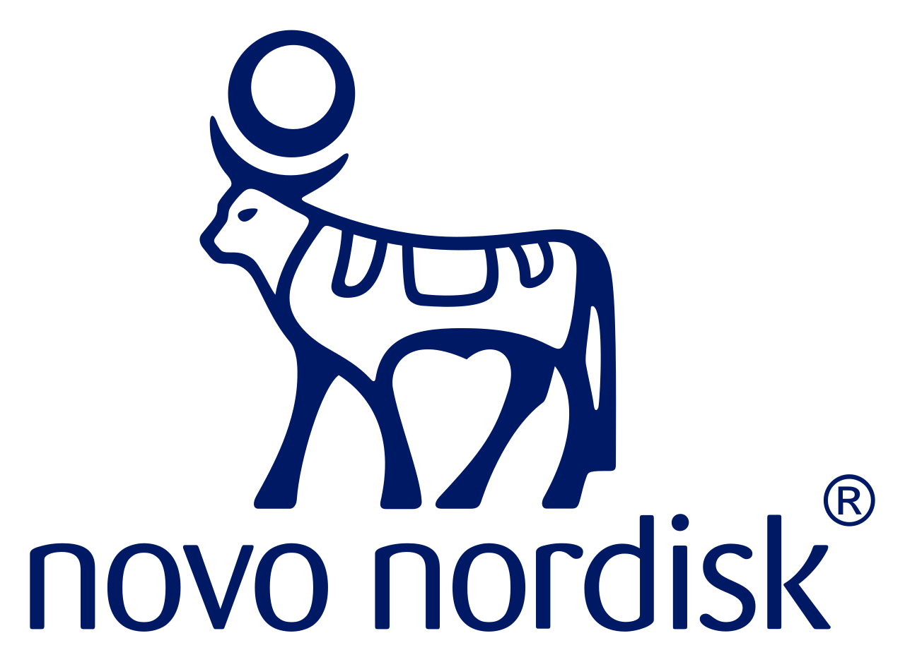

01 / The work
I build the system that doesn't exist yet.
For the bet everyone's excited about and nobody owns.
From the field.
>80%monthly active AI usage across 1,500 people ↗ 4agents in daily use ↗Across classrooms & boardrooms

One recurring gap · AI adoption
You bought the AI.
What got in the way?
10 questions about how your team actually works. You get a likely adoption pattern, two areas to investigate, and a next step you can use.
Take the AI scorecard → Already building? Find your first agent ↗Your answers might suggest
Island of
excellence.
A few people get enormous value.
The practice isn't spreading.
Give one champion protected time to help three colleagues complete a real task.
Illustrative example. Your result depends on your answers.
02 / How bets stall
Every big bet needs a name on it. Ideally, Akshat's.
-
Mandate stays fuzzy.
Everyone agrees it matters. Nobody agrees what it is.
Shape the bet
Market maps, customer truth, opportunity sizing, and a clear answer to where to play and how to win.
-
Thing it needs doesn't exist.
No function, no system, no route to market...
Build the function
First operating model, intelligence engine, GTM system, or strategy and analytics capability, from scratch.
-
Works until the champion leaves.
The pilot glows, then someone changes roles and off it goes.
Make it hold
Pilots, governance, measurement, and ownership until it runs without me.
03 / Selected work
Dispatches from the field.
04 / Detours
Bets I got wrong.
(Kept here on purpose. You learn more from the detours.)
-
- What I believed
- A good dashboard shows everything. So my first one was built to be comprehensive.
- What actually happened
- Too many metrics. Adoption only went up once I cut it back to the essentials.
- What I do differently now
- I start from the decision an executive needs to make, and work backwards to the few numbers that answer it.
-
- What I believed
- Get the technology right on a “simple” AI tool, and people will use it.
- What actually happened
- The technology was the easy part. I underestimated how much change management it needed.
- What I do differently now
- I plan adoption from day one: start with 10 power users, appoint champions, scale only once it’s proven.
The next interesting thing
Got a bet with no owner?
Bring the half-formed version. You'll leave the call with a clearer next step, whether or not we work together.
I take on 3 new bets a quarter. 1 open for Q4 2026.
Prefer email? workwithakshatkharbanda@gmail.com
You scrolled all the way down. That's either diligence or procrastination. Either way, I respect it.